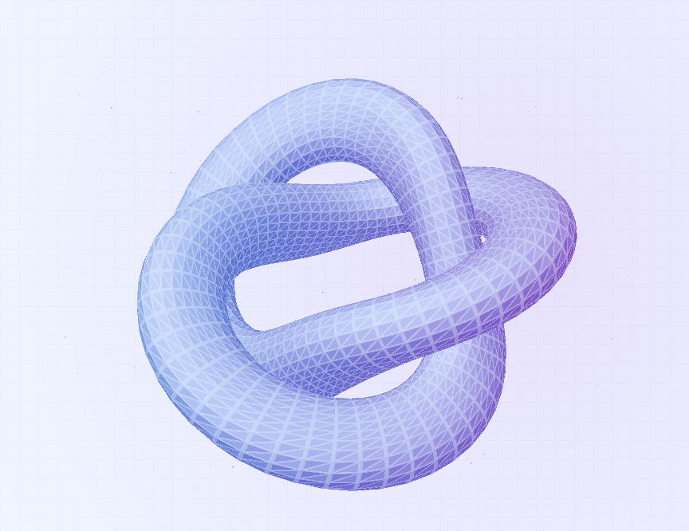

3D Reconstruction
We reconstruct the 3D geometry of objects and spaces from multiview images and depth sensors.
HANBAT NATIONAL UNIVERSITY
We reconstruct and visualize the physical world in 3D. Our research spans 3D reconstruction, digital avatars, and multimodal AI.

We reconstruct the 3D geometry of objects and spaces from multiview images and depth sensors.

We remove noise from scanned and generated models while preserving their geometry and detail. We also study how to assess the visual quality of 3D meshes.

We estimate facial shape and surface detail from images and sensor data to build personalized 3D models.